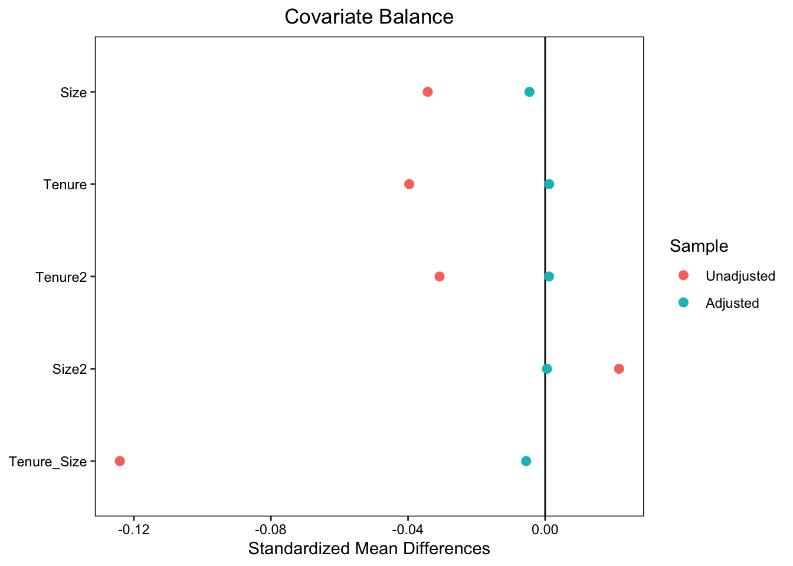
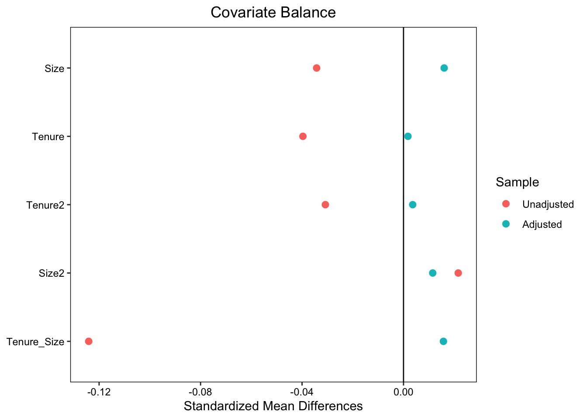
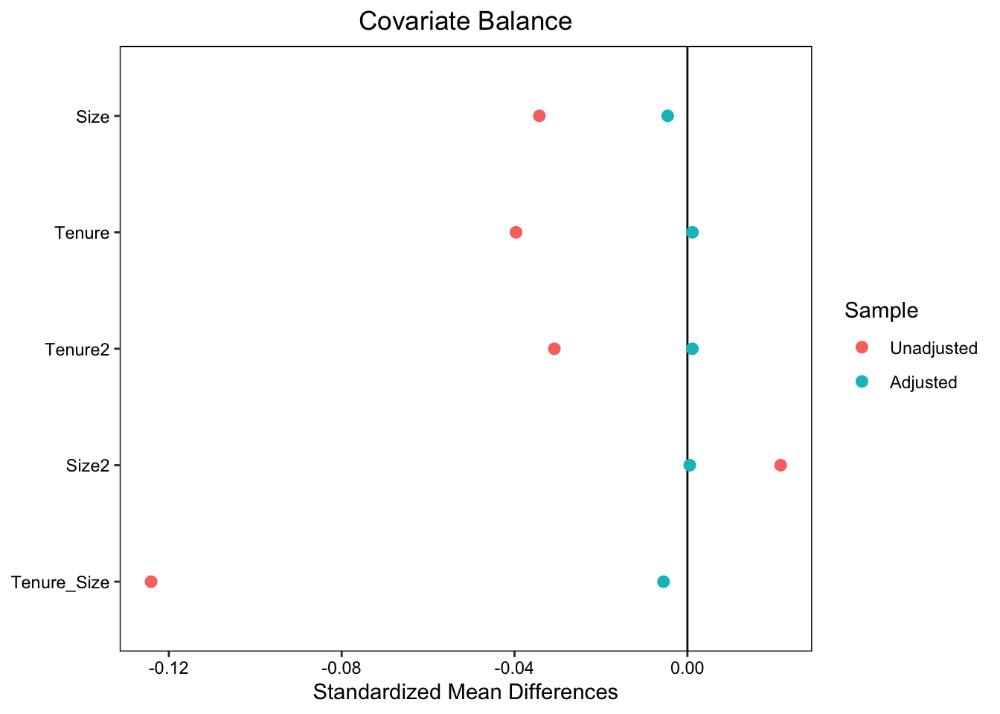
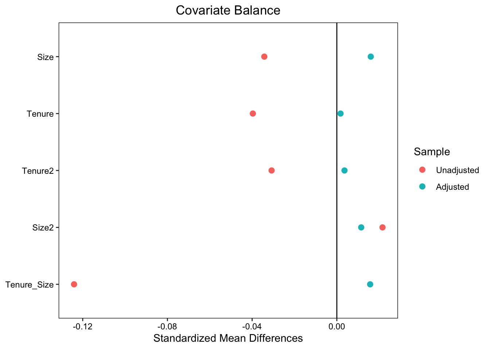
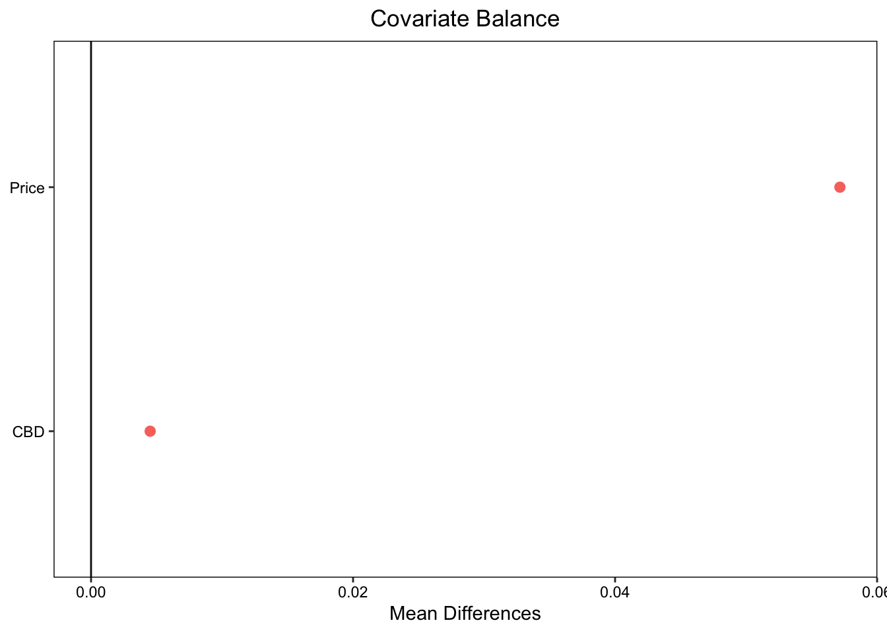
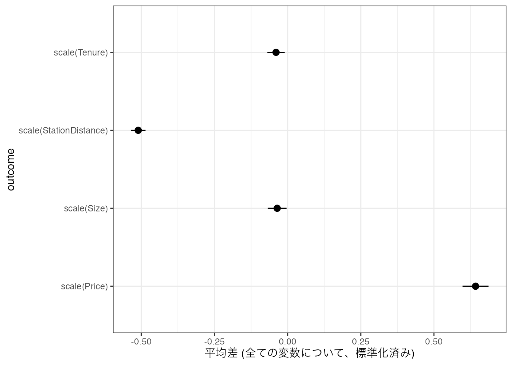

Call:
lm(formula = Y ~ Z + X, data = Temp)
Coefficients:
(Intercept) Z X
5.684e-15 1.000e+00 1.000e+00 バランス後の比較
\(D\) 間で \(X\) についての偏りを均した上で、\(Y\) についてどの程度差が存在するのか?
注: \(D,Y,X\) は分析に先立って、分析者が政策的関心等に応じて設定する必要がある

term estimate std.error statistic p.value conf.low conf.high df
1 CBD 24.16031 0.8517858 28.3643 2.934426e-174 22.49076 25.82986 25356
outcome
1 Price term estimate std.error statistic p.value conf.low conf.high df outcome
1 CBD 22.57652 0.5301507 42.58509 0 21.53739 23.61564 25353 Price term estimate std.error statistic p.value conf.low conf.high df outcome
1 CBD 22.68893 0.5431694 41.77137 0 21.62429 23.75357 25350 PriceBen-Michael et al. (2021)
Hainmueller (2012)
伝統的には、重回帰分析を用いた分析 \(Y\sim D + X_1+..\) が行われてきた
機械学習とOLSの併用が有効
CausalMLBookの1,4,10章に相当
\(E[Y|D=1] - E[Y|D=0] = Y\) の平均値の差
通常、 \(Y\) 以外の変数 \(X\) についても、\(D\) 間で差が存在する
\(X\) について差がなかった(バランスさせた)場合に、 \(Y\) についてどの程度差が存在するのか \(?\)
出生の動向を把握する上で、新生児数を年次比較する
成人の年齢構造の変化を無視している
学歴や家族構成などもバランスさせることは可能か？
あるコンビニチェーンで、店舗あたりの平均売り上げが1000万円増大した \[E[Y|D=1] - E[Y|D=0]= 1000万円\]
去年から今年にかけて、新規出店が大きく増加した
既存店 (\(=X\)) に絞って、比較する
あるコンビニチェーンで、大手町店と本郷三丁目店で、客単価が大きく異なる
客層の違いに起因しているのではないか?
来客の年齢や職業 (\(=X\)) の分布を仮想的に揃えて、比較する
コンビニの改装が平均的にどの程度、平均売上を上昇させるのか
「改装するかどうかの意思決定、および価格に影響を与える変数」(Confounders)が\(D\)間で偏る
データから観察できる Confoundersについては、分布を揃える必要がある
(発展) 観察できないConfoundersへの対処は?
全ての\(X\)の組み合わせについて、平均差 \(E[Y|D=1,X] - E[Y|D=0,X]\) を計算する
問題点: \(X\) の組み合わせが増えると、サブグループ内での事例数が極端に小さくなり、実行不可能
データを2分割する (訓練/テスト)
訓練データを用いて、\(X\) から \(Y/D\) を予測するモデル \(g_Y(X)/g_D(X)\) を推定する
テストデータを用いて、\(Y/D\)の予測誤差をOLSで回帰し係数 \(\beta_D\) を推定値とする \[Y-g_Y(X)\sim D - g_D(X)\]
事例1と４の間で、\(700\) 万円近くの 以上の価格格差
\(X\) が大きく異なる
実際の格差から、(\(X\)の影響を捉える) 予測値の差を引くと ほとんど格差はない
価格 \(=\) 取引年 \(+\) \(X\) の影響 \(+\) その他
予測モデルが\(X\) の影響を完全に捉え、その他の影響がなければ、 \[\underbrace{Y_1 - Y_2}_{事例1と2の賃金格差}-\underbrace{g_Y(X_1) - g_Y(X_2)}_{予測格差}\] \[=\underbrace{Y_1 - g_Y(X_1)}_{1についての予測誤差} - \underbrace{(Y_2 - g_Y(X_2))}_{2についての予測誤差}\] は、バランス後の賃金格差を捉える
その他の影響は、当然存在する
個別事例について、影響を排除することは困難
大量の事例の平均をとることで、平均格差を明らかにする \[\underbrace{E[Y - g_Y(X)|D=1]}_{D=1についての平均予測誤差} - \underbrace{E[Y - g_Y(X)|D=0]}_{D=0についての平均予測誤差}\]
\(g_Y(X)=E[Y|X]\) であれば、バランス後の平均格差の優れた推定値
限られた事例から推定された予測モデルは、理想的なものと乖離する: \(g_Y(X)\neq E[Y|X]\)
\(D\) の予測モデル \(g_D(X)\) も併用する
\(Y\) の予測誤差 \(Y-g_Y(X)\) を \(D\) の予測誤差 \(D-g_D(X)\) で回帰する
R learnerは、Double/Debiased Machine Learningと呼ばれる手法の一つ
最終的にはOLSや平均値などで推定する
予測モデルの不完全性 (AIのミス) の悪影響を、複数の予測モデルを組み合わせることで減らす
予測モデルが同時に母平均から大きく乖離しなければOK (“AIによるDouble Check”)
\(g_Y(X),g_D(X)\) が \(E[Y|X],E[D|X]\) をある程度近似できるのであれば (後述)、近似的な信頼区間を計算可能
十分な事例数 (私見では500事例以上)
適した推定方法の採用 (後日議論)
注: \(Y,D\) を高い精度で予測する必要はない
「\(X\) の分布を均した後の比較」を行う伝統的方法は、以下のモデルを重回帰する \[E[Y|D,X]=\beta_0 + \beta_D D + \beta_1X_1+...\]
FWL定理 (wiki)より、R-leanerの特殊ケースと見做せる
全データ を用いて、 OLS で予測モデル \(g_Y(X)=\beta_0 + \beta_1X_1+..., g_D(X)=\alpha_0+\alpha_1X_1+..\) を推定
以下はR-learnerと同じ手順
R-learnerの推定結果は、以下のモデルを推定した場合の結果と一致 (Robinson 1988) \[Y=\tau D + \underbrace{f(X)}_{何らかの(blackboxな)関数} + \underbrace{u}_{E[u|D,X]=0}\]
シンプルな比較分析であれば、伝統的な推定方法が有効
複雑な比較分析、ここでは \(X\) をバランスさせた後での比較、においては機械学習も併用することで、分析の信頼性を改善できる